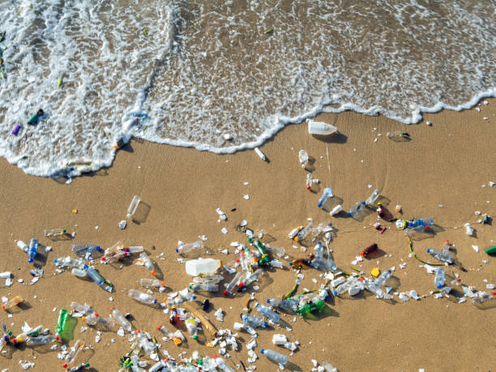
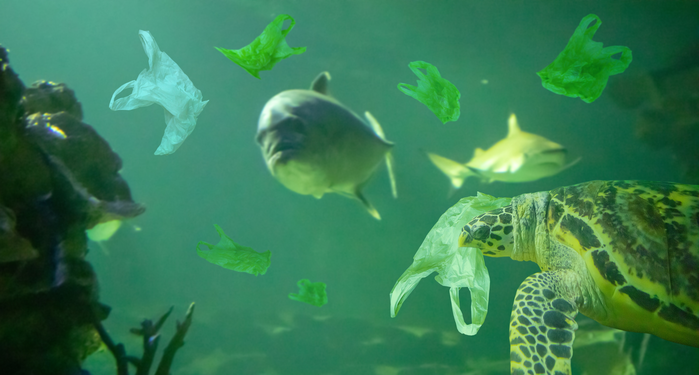

Humans are the cause
There are many endangered species in the ocean more than 100,000 species are threatened with extinction. And many of them are already extinct due to human activities such as overfishing, habitat destruction, and pollution.
Source: iStock
😮 Which species are beign targeted?
Many kinds of speceis are being targeted for extinction such as sea turtles, corals and most significant endangered kind are dolphins according to the IUCN redlist in our table these species are some of the most vulnarable and endangered animal.

Maui Dophin swimming (source: Adobe stock)
😱 What are the reasons for them to be endangered?
Most significant reason for these species to be endangered is human activities such as overfishing, habitat destruction, and pollution. These activities have led to a decline in the population of these species, making them vulnerable to extinction. Climate change is also a significant threat to these species, as it affects their habitats and food sources.
😇 Why are these species important?
They play a crucial role in maintaining the balance of the ocean ecosystem. They help to regulate the food chain, and their extinction can have a significant impact on the entire ecosystem. For example, dolphins are apex predators, and their decline can lead to an increase in the population of smaller fish, which can disrupt the balance of the ecosystem. And also
😍 How can we conserve them?
We can help to conserve these species by reducing our impact on the environment. This includes reducing our carbon footprint, reducing plastic waste, and supporting sustainable fishing practices. We can also support conservation efforts by donating to organizations that work to protect these species and their habitats. Additionally, we can raise awareness about the importance of these species and the threats they face. BY taking these actions, we can help to ensure that these species continue to thrive in the ocean for generations to come.
.jpg)